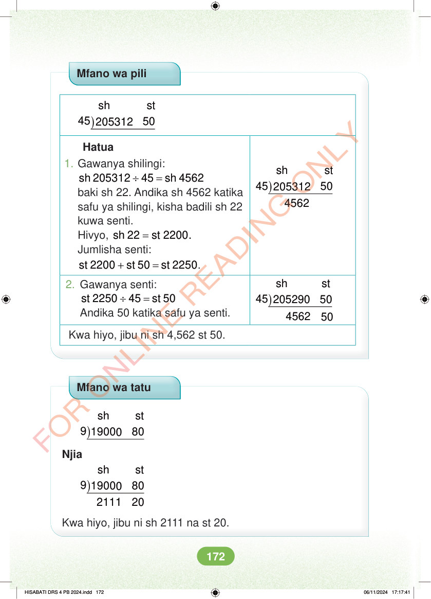

Mfano wa pili sh st 45 50 205312 ) ) sh st 45 50 205312 4562 Hatua 1. Gawanya shilingi: ÷ = sh 205312 45 sh 4562 baki sh 22. Andika sh 4562 katika safu ya shilingi, kisha badili sh 22 kuwa senti. Hivyo, = sh 22 st 2200. Jumlisha senti: + = st 2200 st 50 st 2250. ) sh st 45 290 50 205 2. Gawanya senti: ÷ = st 2250 45 st 50 Andika 50 katika safu ya senti. 4562 50 Kwa hiyo, jibu ni sh 4,562 st 50. Mfano wa tatu ) sh st 9 1900 80 0 Njia ) sh st 9 1900 80 0 2111 20 Kwa hiyo, jibu ni sh 2111 na st 20. HISABATI DRS 4 PB 2024.indd 172 HISABATI DRS 4 PB 2024.indd 172 06/11/2024 17:17:41 06/11/2024 17:17:41